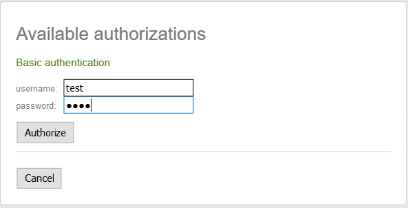
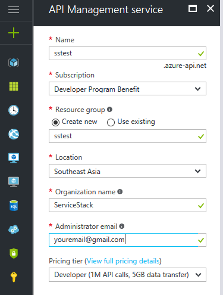
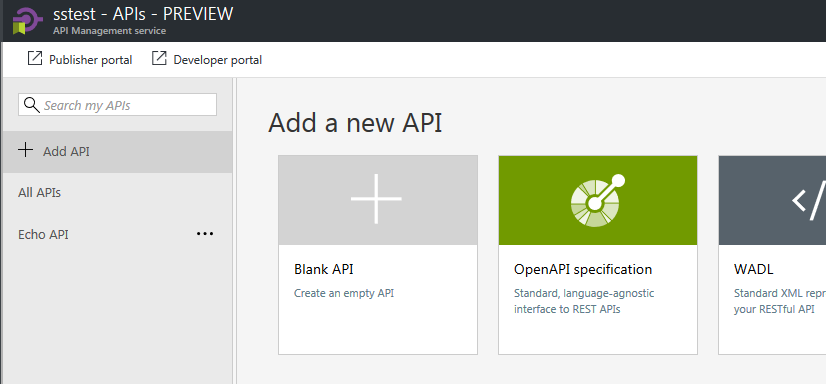

We've got a super mega release in store bursting with exciting new features across ServiceStack and its surrounding ecosystem with new support for the Open API specification enabling new integration possibilities with Azure API Management and Azure AutoRest, our real-time Server Events solution extending to new Mobile, Desktop and Server platforms, more flexible Authentication options to dramatically simplify integration with Mobile, Desktop and Web clients, effortless JWT Refresh Tokens, enhanced support for TypeScript and Java client libraries, new compression options, upgrades to the latest Fluent Validation with support for Async validators, Async Request Filters, a number of new quality OSS ServiceStack projects developed by the community and lots more use-case driven features and refinements across the entire ServiceStack suite!
Open API

We're thrilled to be able to ship another most requested feature in this release with new support for the Open API 2.0 specification - the successor to the Swagger Specification that our original Swagger API Plugin was based on.
The Open API Plugin is available in the ServiceStack.Api.OpenApi NuGet package and can be installed with:
PM> Install-Package ServiceStack.Api.OpenApi
Then enabled by registering the OpenApiFeature Plugin in your AppHost:
public override void Configure(Container container)
{
Plugins.Add(new OpenApiFeature());
// Plugins.Add(new CorsFeature()); //Uncomment to allow access to external sites
}
Once enabled the Open API spec for your Services will be available from the /openapi endpoint which opens
up a number of new integration possibilities for interacting with your Services:
Embedded Swagger UI
The immediate benefit is being able to view your Services with the embedded
Swagger UI available at /swagger-ui/
which lets you explore and call your Services from a dynamic UI generated using your Services Open API spec:

Annotating your Services
You can continue annotating your Services with the existing metadata attributes to further customize
how your Services are documented in the Open API spec and displayed in the resulting /swagger-ui, e.g:
[Api("Service Description")]
[ApiResponse(HttpStatusCode.BadRequest, "Your request was not understood")]
[ApiResponse(HttpStatusCode.InternalServerError, "Oops, something broke")]
[Route("/swagger/{Name}", "GET", Summary = "GET Summary", Notes = "Notes")]
[Route("/swagger/{Name}", "POST", Summary = "POST Summary", Notes="Notes")]
public class MyRequest
{
[ApiMember(Name="Name", Description = "Name Description",
ParameterType = "path", DataType = "string", IsRequired = true)]
[ApiAllowableValues("Name", typeof(Color))] //Enum
public string Name { get; set; }
}
Calling Authenticated Services
Users can call protected Services using the Username and Password fields in Swagger UI which are sent using HTTP Basic Auth that can be enabled in your AppHost with:
Plugins.Add(new AuthFeature(...,
new IAuthProvider[] {
new BasicAuthProvider(), //Allow Sign-ins with HTTP Basic Auth
}
));
Available in Swagger UI via the Authorize button:
Which will open a dialog to enter your username and password:

Alternatively you can authenticate outside of Swagger UI (e.g. via an OAuth flow) and then return to
/swagger-ui as an Authenticated User where you'll be able to call authenticated Services.
Azure API Management
One of the most popular reasons for Customers wanting Open API support is to be able to make use of Azure API Management which adds a high-level gateway over your APIs that lets you take advantage of value-added solutions like layering on API key or token Security, IP Filtering, rate-limiting and real-time analytics to monitor usage of your APIs.
This is now possible with Open API support where you can create a new Service under API management services in your Azure portal:


Once Management API is activated (which can take >40mins), click on your API that was just created:


To add your Services, click Add API and choose OpenAPI specification:

Here you can either specify the url for your Services /openapi endpoint or if preferred, upload a
local saved copy of your Services openapi.json:

If the import was successful you'll see a list of available operations for your Services:

AutoRest
Another popular tool you can use with Open API is Azure AutoRest which generates client libraries for accessing RESTful web services in a number of different languages which at this time includes C#, Java, Node.js, TypeScript, Python and Ruby.
To use AutoRest first install it from npm:
npm install -g autorest
Then you need to download the Open API specification for your Services using a tool like curl:
curl http://your.domain/openapi > openapi.json
Or if you have PowerShell installed, you can use iwr:
iwr http://your.domain/openapi -o openapi.json
You can then use the openapi.json with autorest to generate a client for your API in your preferred language, e.g:
autorest --latest-release -Input openapi.json -CodeGenerator CSharp -OutputDirectory AutoRestClient -Namespace AutoRestClient
This will generate directory containing your model types and REST operations that you can use with the generated client, e.g:
using (var client = new SampleProjectAutoRestClient("http://localhost:20000"))
{
var dto = new SampleDto { /* .... */ };
var result = client.SampleOperation.Post(body: dto);
// process result
}
AutoRest clients will allow usage of tooling that have adopted AutoRest and is a good stop gap solution for generating native clients for languages that Add ServiceStack Reference doesn't support yet like Python and Ruby.
AutoRest Generated Clients vs Add ServiceStack Reference
However AutoRest generated clients are similar to WCF Service Reference generated clients where it generates RPC-style Clients that emits both implementation logic and models for sending each request that's coupled to external HttpClient and JSON.NET dependencies. This approach generates significantly more code generation that populates a directory containing multiple implementation and Model classes generated for each Service.
In contrast Add ServiceStack Reference adopts the venerable Data Transfer Object, Gateway and Remote Facade Service patterns where it only needs to generate clean, implementation-free DTO models that it captures in a single source file for all supported languages.
The generated DTOs are cleaner and more reusable where it isn't coupled to any Serialization implementation and can be reused in any of ServiceStack's message-based Service Clients and Serialization Formats or different Service Gateway implementations. The models are also richer where it's able to include additional metadata attributes and marker interfaces that isn't possible when tunneling through a generic API specification.
The use of intelligent generic Service Clients will always be able to provide a richer more productive development experience that can enable higher-level, value-added functionality like Structured Error Handling, Smart HTTP Caching, Auto Batching, Encrypted Messaging, AutoQuery Streaming, Request Compression, integrated authentication and lots more.
Expanding the Server Events Universe

Server Events is our integrated and high-performance implementation of the Server-Sent Events standard enabling real-time server push notifications over HTTP. Our solution enhances this simple lightweight protocol with rich pub/sub features allowing for flexible and targeted messaging and intelligent clients enabling a variety of different strategies for easily handling events, includes built-in APIs for easily modifying active subscriptions and querying the state of subscribed channels as well as built-in heartbeats and auto-retries for establishing hassle-free persistent connections to backend servers.
We've made great strides in this release towards our goal of expanding the Server Event ecosystem in popular Mobile, Desktop and Server platforms with new first-class implementations for Android, Java and TypeScript which now includes:
- C# Server Events Client
- Xamarin.iOS
- Xamarin.Android
- UWP
- .NET Framework 4.5+
- .NET Core (.NET Standard 1.3+)
- TypeScript Server Events Client
- Web
- Node.js Server
- React Native
- iOS
- Android
- Java Server Events Client
- Android
- JVM 1.7+ (Java, Kotlin, Scala, etc)
- Java Clients
- Java Servers
- JavaScript (jQuery plugin)
- Web
Our C#, TypeScript and Java Server Event Clients are ports with full feature parity as C#, offering the same functionality behind idiomatic APIs for their respective programming language. The Integration test suite has also been ported to each platform to assert behavior conformance and provides a good reference showcasing the aesthetics of using Server Events Clients in each language:
- C# Server Events Integration Tests
- TypeScript Server Events Integration Tests
- Java 8 / JVM Server Events Integration Tests
- Java 7 / Android Server Events Integration Tests
The feature parity and high-level Typed APIs enabled with Add ServiceStack Reference and the generic Service Clients in each platform significantly reduces the porting efforts for maintaining Native Client Apps in different platforms and languages whilst maximizing knowledge investments and reuse as every client works the same way, utilizing same-name message-based APIs to send Typed DTOs so existing knowledge and documentation is instantly transferable between each supported language.
Java Server Events

Kicking off our foray into new platforms is the new Java Server Events Client that's available in the latest version of ServiceStack's Java Client libraries which come in 2 flavors, the net.servicestack:android package which can be installed in your Android Studio build.gradle with:
dependencies {
implementation 'net.servicestack:android:1.0.48'
...
}
Whilst other Java/JVM languages running on JVM (JRE 7+) can use the pure Java net.servicestack:client package which can be installed in Gradle with:
implementation 'net.servicestack:client:1.0.48'
See the docs for Maven examples
On Android, the AndroidServerEventsClient class should be used which extends the Java ServerEventsClient and
enhances it with additional Async APIs and applies platform-specific logic for handling behavioral differences
in Android's implementation of JVM's HttpURLConnection.
Whilst Apps running on the JVM can use ServerEventsClient from the net.servicestack:client Java library.
As their direct sub-classes the 2 classes are for the most part source-compatible with all APIs available in
ServerEventsClient is by extension, also available in AndroidServerEventsClient.
Just like C#, you can connect to Server Events with just the baseUrl and channels you want to connect to.
The example below provides an overview exploring how to configure and use different features of the ServerEventsClient:
ServerEventsClient client = new AndroidServerEventsClient(baseUrl, "home")
.setOnConnect(sub -> { // Successful SSE connection
Log.d("You've connected! welcome " + sub.getDisplayName());
})
.setOnJoin(e -> { // User has joined subscribed channel
Log.d("Welcome, " + e.getDisplayName());
})
.setOnLeave(e -> { // User has left subscribed channel
Log.d(e.getDisplayName() + " has left the building");
})
.setOnUpdate(e -> { // User channel subscription was changed
Log.d(e.getDisplayName() + " has left the building");
})
.setOnMessage(msg -> { }) // Invoked for each other message
//... Register custom handlers
.registerHandler("chat", (client, e) -> { // Invoked for cmd.chat adhoc messages
ChatMessage chatMsg = JsonUtils.fromJson(e.getJson(), ChatMessage.class);
})
.registerReceiver(MyReceiver.class) // Register Global 'cmd.' default receiver
.registerNamedReceiver("tv",TvReceiver.class) // Register named 'tv.' receiver
.addListener("theEvent", msg -> {}) // Add listener for pub/sub event trigger
.setOnException(e -> { }) // Invoked on each Error
.setOnReconnect(() -> { }) // Invoked after each auto-reconnect
.start(); // Start listening for Server Events!
//Global Receiver Class
public class MyReceiver extends ServerEventReceiver {
public void announce(String message){} // Handle messages with simple argument
public void chat(ChatMessage message){} // Handle messages with complex type argument
public void customType(CustomType message){} // Handle complex types with default selector
@Override // Handle other unknown messages
public void noSuchMethod(String selector, Object message){}
}
//Named Receiver Class
public class TvReciever extends ServerEventReceiver {
public void watch(String videoUrl){} // Handle 'tv.watch {url}' messages
public void off(){} // Handle 'tv.off' messages
}
Java Server Events Client Documentation
Full documentation exploring ServerEventsClient features are available in the
Java Server Events Client Docs.
Android Java Chat
To showcase real-world usage of AndroidServerEventsClient in an Android App we've ported
C# Xamarin Android Chat into Java 8 using
Google's recommended Android Studio Development Environment.
In addition to retaining the same functionality as the original
C# Xamarin.Android Chat App, it also leverages the native
Facebook, Twitter and Google SDK's to enable seamless and persistent authentication when signing in with Facebook,
Twitter or Google User accounts.
Since Java Add ServiceStack Reference and Java Server Events Client are idiomatic ports of their C# equivalents, both projects utilized a message-based Typed API that significantly reduces the effort to port from their original C# sources, rendering the task down to a straight-forward 1:1 mapping exercise into Java 8 syntax.

Android Java Chat Walkthrough
Full documentation walking through its implementation and explaining core functionality are available in the AndroidJavaChat Github project. We'll explore some key features below to provide some insight into the capabilities available:
Configuring the Server Events Client
The central hub that powers the Android Chat App is the Server Events Client connection that's registered in MainActivity.java when it's first created and used to bind the Chat Server Events to our App's logic, where:
- Upon successful connection:
- It loads the Chat Message History for the channel
- Updates our User's Avatar
- When a new User Joins:
- Updates the
subscriberListwith a list of all Users in the channel - Instructs our Message History to re-render as its dataset has changed
- Updates the
- When the Server Events Connection throws an Exception:
- Loads an Alert dialog with the Error message
- It uses the Custom
ReceiverResolverto initialize instances of our Receiver classes - Registers
ChatReceiverto handle all messages sent with the globalcmd.*selector - Registers
TvRecieverto handle all messages sent with thetv.*selector - Registers
CssReceiverto handle all messages sent with thecss.*selector
App.get().getServerEventsClient()
.setOnConnect(connectMsg -> {
Extensions.updateChatHistory(getClient(), cmdReceiver, () -> {
Extensions.updateUserProfile(connectMsg, mainActivity);
});
})
.setOnJoin(msg -> {
getClient().getChannelSubscribersAsync(r -> {
subscriberList = r;
messageHistoryAdapter.notifyDataSetChanged();
});
})
.setOnException(error -> mainActivity.runOnUiThread(() ->
Toast.makeText(this, "Error : " + error.getMessage(), Toast.LENGTH_LONG).show()))
.setResolver(new ReceiverResolver(cmdReceiver))
.registerReceiver(ChatReceiver.class)
.registerNamedReceiver("tv", TvReciever.class)
.registerNamedReceiver("css", CssReceiver.class);
Later in onPostCreate() the ServerEventsClient starts the connection and begins listening to Server Events:
@Override
public void onPostCreate(Bundle savedInstanceState) {
//...
App.get().getServerEventsClient().start();
}
Integrated Facebook, Twitter and Google Logins
The primary difference between the C# and Java Android Chat Apps is how they're authenticated. In C# we utilize the
Xamarin.Auth component which wraps a WebView that initiates an
OAuth flow by navigating to the server's chat.netcore.io/auth/facebook
OAuth endpoint. After successful authentication the WebView is redirected back after creating an Authenticated User
Session on the server and populating Session Cookies on the HTTP Response. The Cookies are copied from
the WebView before being dismissed and used to populate the ServerEventsClient's Cookies so it's able to establish
an Authenticated connection to the Server Events /event-stream.
As Xamarin.Auth isn't available to Java on Android, we can instead take advantage of being able to access the latest 3rd Party Android components and leverage Facebook, Twitter and Google's SDKs to handle the OAuth flow for us. We can then use the resulting User's AccessToken to Authenticate with the ServiceStack Server (utilizing a new feature in v4.5.8 announced later).
As they offer different level of customizations we've implemented 2 Login Activities, the 1st Activity shows how to authenticate using Facebook, Twitter and Google's SDK Login buttons whilst the 2nd Activity shows how to use their SDK classes directly to be able to use your own preferred image login buttons.
We'll go through using Facebook's Login button below but you can find all implementations for Facebook, Twitter and Google Sign In's explained in detail in the repo.
LoginButtonsActivity
After Installing Facebook's SDK and registering your ApplicationId in the AndroidManifest.xml you can embed Facebook's Login Button widget in your Activity's layout.xml:
<com.twitter.sdk.android.core.identity.TwitterLoginButton
android:id="@+id/btnTwitterLogin"
android:layout_width="wrap_content"
android:layout_height="wrap_content" />
<com.facebook.login.widget.LoginButton
android:id="@+id/btnFacebookLogin"
android:layout_width="wrap_content"
android:layout_height="wrap_content"
android:layout_gravity="center_horizontal"
android:layout_marginTop="30dp"
android:layout_marginBottom="30dp" />
<com.google.android.gms.common.SignInButton
android:id="@+id/sign_in_button"
android:layout_width="wrap_content"
android:layout_height="wrap_content" />
<Button
android:text="Guest Login"
android:layout_width="wrap_content"
android:layout_height="wrap_content"
android:id="@+id/btnGuestLogin" />
Which renders your Activity into something like:

Then you can Authenticate with Facebook Login button by registering a callback on the LoginButton. After that it's
simply a matter of handling the Facebook onSuccess(), onCancel() and onError() callbacks.
When the onSuccess() callback is fired it means the User has successfully Signed In locally into our Android App,
we then need to Authenticate with the
ServiceStack Chat Server by making an Authenticated request using the User's Facebook
AccessToken:
facebookCallback = CallbackManager.Factory.create();
btnFacebookLogin = (LoginButton) findViewById(R.id.btnFacebookLogin);
btnFacebookLogin.setReadPermissions("email"); // Ask user for permission to get their email
btnFacebookLogin.registerCallback(facebookCallback, new FacebookCallback<LoginResult>() {
@Override
public void onSuccess(LoginResult loginResult) {
UiHelpers.setStatus(txtStatus, "Local sign-in successful, signing into server");
App.get().getServiceClient().postAsync(new dtos.Authenticate()
.setProvider("facebook")
.setAccessToken(loginResult.getAccessToken().getToken())
.setRememberMe(true),
r -> {
UiHelpers.setStatus(txtStatus, "Server sign-in successful, opening chat");
stopProgressBar();
startActivity(new Intent(activity, MainActivity.class));
},
error -> {
UiHelpers.setStatusError(txtStatus, "Server facebook sign-in failed", error);
stopProgressBar();
});
}
@Override
public void onCancel() {
stopProgressBar();
}
@Override
public void onError(FacebookException exception) {
Log.e(exception);
stopProgressBar();
}
});
One additional callback we need to handle is onActivityResult() to notify the Facebook Login button that the activity
it launched to initiate the User's OAuth flow has completed:
@Override
protected void onActivityResult(int requestCode, int resultCode, Intent data) {
super.onActivityResult(requestCode, resultCode, data);
facebookCallback.onActivityResult(requestCode, resultCode, data);
}
Once the User has authenticated with the ServiceStack Server, the Authenticated Session Cookies are populated on the Service Client which can then be used to make authenticated requests.
Automatically Sign-In previously Signed In Users
After the User has successfully Authenticated with Facebook the first time you'll be able to access their saved
token from Facebook's AccessToken.getCurrentAccessToken() and automatically sign them into ServiceStack Server
on future restarts:
AccessToken facebookAccessToken = AccessToken.getCurrentAccessToken();
if (facebookAccessToken != null){
client.postAsync(dtos.Authenticate()
.setProvider("facebook")
.setAccessToken(facebookAccessToken.getToken())
.setRememberMe(true),
r -> {
//User has signed using Saved Access Token
});
}
For more info checkout the Java Server Events Docs and the walk through of the Android Java Chat App.
TypeScript Server Events Client
The TypeScript Server Event Client was also overhauled to match the behavior in the C# and Java Server Events Client including its integration test suite which performs equally well in both Web and node.js test runners.
To give you a flavor, here's a comparative overview you can use to compare with the earlier Java registration example:
const channels = ["home"];
const client = new ServerEventsClient("/", channels, {
handlers: {
onConnect: (sub:ServerEventConnect) => { // Successful SSE connection
console.log("You've connected! welcome " + sub.displayName);
},
onJoin: (msg:ServerEventJoin) => { // User has joined subscribed channel
console.log("Welcome, " + msg.displayName);
},
onLeave: (msg:ServerEventLeave) => { // User has left subscribed channel
console.log(msg.displayName + " has left the building");
},
onUpdate: (msg:ServerEventUpdate) => { // User channel subscription was changed
console.log(msg.displayName + " channels subscription were updated");
},
onMessage: (msg:ServerEventMessage) => {} // Invoked for each other message
//... Register custom handlers
announce: (text:string) => {} // Handle messages with simple argument
chat: (chatMsg:ChatMessage) => {} // Handle messages with complex type argument
CustomMessage: (msg:CustomMessage) => {} // Handle complex types with default selector
},
receivers: {
//... Register any named receivers
tv: {
watch: function (url) {}, // Handle 'tv.watch {url}' messages
off: function () {} // Handle 'tv.off' messages
}
},
onException: (e:Error) => {}, // Invoked on each Error
onReconnect: (e:Error) => {} // Invoked after each auto-reconnect
})
.registerReceiver(MyReceiver) // Register Global 'cmd.' default receiver
.registerNamedReceiver("window", window) // Register named 'window.' receiver
.addListener("theEvent",(e:ServerEventMessage) => {}) // Add listener for pub/sub event trigger
.start(); // Start listening for Server Events!
class MyReceiver extends ServerEventReceiver {
announce(message:string) {} // Handle messages with simple argument
chat(request: ChatMessage) {} // Handle messages with complex type argument
CustomType(request: CustomType) {} // Handle complex types with default selector
noSuchMethod(selector:string, message:ServerEventMessage) {} // Handle other unknown messages
}
Built-in CSS Receiver
One additional feature the TypeScript (and JavaScript) Server Events Clients have over C# and Java is its built-in
css.* handler which lets you automatically
modify the styles of any CSS Selector using the format:
css.{propertyName}${cssSelector} {propertyValue}
Which roughly translates to:
each(document.querySelectorAll({cssSelector}), x => x.style.{propertyName} = {propertyValue});
So the message:
css.background$#top #fff
Will change the #top element's background color to white, similar to:
document.querySelector("#top").style.background = "#fff";
All other "non-Web" Apps will need to register a named CSS Selector to handle these css.* messages and
translate its instructions themselves to modify their App's styles as done in Android Java Chat's
CssReceiver.java.
Breaking changes
As the TypeScript Server Events Client now follows the multi-platform C#/Java design you'll now need to explicitly
call .start() to connect to the Server Events Stream and start listening for messages.
Type definitions for the built-in Server Event Messages have also been renamed to match their equivalent C#/Java
Type names, e.g: ServerEventMessage, ServerEventConnect, ServerEventJoin, etc.
Web, Node.js and React Native ServerEvents Apps
The TypeScript @servicestack/client npm package is a cross-platform library enabling a rich, productive end-to-end Typed development experience on Web, node.js Server projects, node.js test suites, React Native iOS and Android Mobile Apps - written in either TypeScript or plain JavaScript.
To help getting started using @servicestack/client in each of JavaScript's most popular platforms we've developed a simple Server Events Web, Node.js and React Native Mobile iOS App that can connect to any Server Events Server and listen to messages published on the subscribed channel. The App also maintains a live synchronized list of Users in the channel that's automatically updated whenever Users join or leave the channel:

Each App uses the optimal starting configuration that enables a productive workflow on each platform and uses the minimum
runtime dependencies - essentially just @servicestack/client
and its es6-shim and W3C EventSource polyfills on Node.js and React Native where it's missing a native implementation.
Web App
The Web Example App built with less than >100 lines of application code that's made up of the 4 files below with all functionality maintained in app.ts:
- app.ts - Entire App Logic
- dtos.ts - Server generated DTOs from chat.netcore.io/types/typescript
- index.html - Static HTML page
- default.css - Static default.css styles
Node.js Server App
The /node server.js app has the same functionality as the Web App except instead of connecting to the chat.netcore.io Events stream on the client, all connections are made in node.js and it's only the server state that's sent to the client, which it uses to render the UI.
As the functionality of the app remains the same, the Node.js App is able to reuse the Web App's existing
dtos.ts, .html and .css:
The difference is in the App's logic which is now split into 2 files, one for the node.js server.ts which now contains most of the App's functionality and another for the Web clients app.ts, now relegated to periodically updating the UI with the node.js server state:
- server.ts - maintain all client and server events connection to chat.netcore.io
- app.ts - periodically render node.js state to HTML UI
React Native Mobile App
Arguably the most exciting platform you can build with JavaScript in recent times is Facebook's React Native where you can take advantage of React to develop Native iOS and Android Mobile Apps with Web App productivity. Thanks to Facebook's relentless focus on developer tooling and productivity, building rich native iOS and Android UI's can now be done at record speed in a fast iterative workflow with UI changes visible instantly.
The React Native Getting Started Guide will get you up and running with everything you need to start building Native Mobile Apps which is also pre-configured with Babel so you can take advantage of advanced ES6 and ES7 language features.
For the React Native App we've decided to stick with React Native default of using ES6/JavaScript instead of TypeScript to showcase that we'll still able to enjoy the same simplified programming model and concrete Types that @servicestack/client enables, in pure JavaScript Apps.
React Native Structure
Unlike Web Apps which splits behavior, layout and styles across multiple .ts, .html and .css files,
React Apps can be built using just JavaScript as seen in the single index.ios.js which contains the
App's entire functionality, layout and style in <200 Lines of JavaScript:
- index.ios.js - The entire App including all behavior, layout and styles
- dtos.js - Server DTOs from chat.netcore.io/types/typescript and compiled into .js using
tsc
The smaller screen size means our React Native App adopts a more compact layout but otherwise retains similar functionality to the other Web Apps which looks like:

Typed API calls in JavaScript
Despite the React Native App having been developed in ES6/JavaScript, it still uses exactly the same syntax for making Typed API calls, importing libraries and Server's Typed DTOs.
Only one additional step is needed after importing the Servers TypeScript DTOs which is to compile it to JavaScript, which can be done by invoking the TypeScript compiler with the file directly:
tsc dtos.ts
Now the Server APIs can be consumed as normal by populating a Request DTO and sending it using the generic
JsonServiceClient:
import { ServerEventsClient } from '@servicestack/client';
import { PostChatToChannel } from './dtos';
sendChat = () => {
if (!this.state.txtChat || !this.sub)
return;
let request = new PostChatToChannel();
request.from = this.sub.id;
request.channel = this.state.channel;
request.selector = "cmd.chat";
request.message = this.state.txtChat;
this.client.serviceClient.post(request);
}
In addition to great code reuse, JavaScript is surprisingly also able to benefit from the original TypeScript definitions thanks to
VS Code's Salsa Engine
which provides the Language Services for both TypeScript and JavaScript source files in VS Code, so even though there are
no Type annotations in JavaScript it's still able to provide rich intelli-sense from the original dtos.ts TypeScript sources:

Ctrl+Click on the Request DTO Type also navigates to the Type definition in dtos.ts despite none of the properties
existing in the compiled
dtos.js
that's used at runtime.
Consuming ServiceStack Services in TypeScript or JavaScript projects
For more info developing Apps using @servicestack/client see the complete source code and detailed walkthrough in the typescript-server-events project.
C# Server Events Client
The C# Server Events Client also had a number of refinements added to it, primarily to maintain behavior and API conformance with the Java and TypeScript Client Libraries:
Distinct OnJoin, OnLeave OnUpdate and OnReconnect callbacks are now available which can be used to handle a
specific event, e.g:
var client = new ServerEventsClient(baseUrl, channel) {
OnJoin = msg => ...,
OnLeave = msg => ...,
OnUpdate = msg => ...,
OnReconnect = () => ...
};
Event Triggers
Triggers enable a pub/sub event model where multiple listeners can subscribe and be notified of an event.
Registering an event handler can be done at anytime using the addListener() API, e.g:
client.addListener("customEvent", msg => updateUI(msg));
client.addListener("customEvent", msg => updateState(msg));
StrictMode
As C# is a statically-typed language it's able to use the Type Information in method signatures to determine which method to invoke which allows us to be able to use any name for our Methods and Properties, e.g:
public class MyGlobalReceiver : ServerEventReceiver
{
public void FooMethod(CustomType request) {}
public SetterType BarSetter { get; set; }
}
But this isn't possible in other dynamic languages or JVM's Type erasure so the method or property name needs to match
the Complex Type message being sent so we can determine what to invoke. To encourage development of portable source code
across different languages we've added a StrictMode flag to also enforce this constraint in C# clients as well, e.g:
public class MyGlobalReceiver : ServerEventReceiver
{
public void CustomType(CustomType request) {}
public SetterType SetterType { get; set; }
}
Parameterless methods
You can now invoke methods without arguments as seen with Toggle() below which can be used to handle
Chat's cmd.toggle command, e.g:
public class MyGlobalReceiver : ServerEventReceiver
{
public void Toggle() {}
}
TypeScript @servicestack/client improvements
New APIs have been added to TypeScript's @servicestack/client to catch up with the additional flexibility and features available in C#/.NET Service Clients:
Sending additional arguments with Typed API Requests
Many AutoQuery Services utilize implicit conventions to query fields that aren't explicitly defined on AutoQuery Request DTOs, these can now be queried by specifying additional arguments with the typed Request DTO, e.g:
const request = new FindTechStacks();
client.get(request, { VendorName: "ServiceStack" })
.then(r => { }) // typed to QueryResponse<TechnologyStack>
Which will return TechStacks developed by ServiceStack.
Calling APIs with Custom URLs
In addition to Typed API Requests you can now also call Services using relative or absolute urls, e.g:
client.get<GetTechnologyResponse>("/technology/ServiceStack")
client.get<GetTechnologyResponse>("https://techstacks.io/technology/ServiceStack")
// GET https://techstacks.io/technology?Slug=ServiceStack
client.get<GetTechnologyResponse>("/technology", { Slug: "ServiceStack" })
Relaxed TypeScript Definitions
TypeScript Add ServiceStack Reference can generate either TypeScript Concrete Types or Ambient Interface Definitions for your Services at the following routes:
- /types/typescript - Server Concrete DTO Types
- /types/typescript.d - Server Ambient Interface Definitions
These were previously both generated to enable an optimal end-to-end Typed API for use in the TypeScript @servicestack/client which needs to embed metadata in Request DTOs to retain necessary type information that remains preserved after minification.
However a number of Customers have indicated they wish to continue using their preferred HTTP Client of choice (e.g. restangular) and would instead prefer to use the ambient interface definitions to add compiler Type Checking to their object literal requests like:
let request:QueryContracts = { accountId: 1234 };
This use-case was hindered by the additional IReturn<T> metadata requirements implemented by Request DTOs which
have now been relaxed in this release so they can be used to Type object literals as above. But as metadata in
Request DTO interface definitions are no longer inferrable, their return Type and route will need to be supplied
on each call-site, e.g:
let request:FindTechnologies = { vendorName: "ServiceStack" };
client.get<QueryResponse<Technology>>("/technology/search", request)
.then(r => { }); //typed response
But if you are using the TypeScript JsonServiceClient we recommend instead using the Server Concrete DTOs to
enable a succinct Typed API free of unnecessary boilerplate, e.g:
let request = new FindTechnologies();
request.vendorName = "ServiceStack";
client.get(request)
.then(r => { }); //typed response
Authentication via OAuth AccessTokens
To improve OAuth Sign In integration from native Mobile or Desktop Apps we've added support for direct Authentication via AccessTokens which can dramatically simplify the Development and User Experience by being able to leverage the Native Facebook, Twitter and Google Client SDK's to Sign In users locally then reuse their local AccessToken to Authenticate with back-end ServiceStack Servers. This feature is what's used to enable Integrated Facebook, Twitter and Google Logins in Android Java Chat and be able to Automatically Sign In users with saved AccessTokens.
This capability is now available on the popular OAuth Providers below:
FacebookAuthProvider- Sign in with FacebookTwitterAuthProvider- Sign in with TwitterGithubAuthProvider- Sign in with GithubGoogleOAuth2Provider- Sign in with Google
It can also be enabled in other OAuth2 Providers by implementing VerifyAccessToken to manually
validate whether the provided AccessToken is valid with the registered OAuth App. The API to validate Access
Tokens isn't part of the OAuth2 specification and is different (and often missing) for other OAuth2 providers.
As an example, the GoogleOAuth2Provider uses a VerifyAccessToken implementation that's similar to:
new GoogleOAuth2Provider {
VerifyAccessToken = accessToken => {
var url = $"https://www.googleapis.com/oauth2/v1/tokeninfo?access_token={accessToken}";
var json = url.GetJsonFromUrl();
var obj = JsonObject.Parse(json);
return obj["issued_to"] == ConsumerKey;
}
}
Client Authentication with AccessToken
Clients can utilize this feature with the new AccessToken and AccessTokenSecret properties on the existing
Authenticate Request DTO, sent with the provider that the AccessToken is for, e.g:
var response = client.Post(new Authenticate {
provider = "facebook",
AccessToken = facebookAccessToken,
RememberMe = true,
});
Most OAuth Providers only require sending an
AccessTokenwith Twitter being the exception which also requires sending anAccessTokenSecret.
This works similarly to other Authenticated Client Requests where if successful it will return a
populated AuthenticateResponse DTO and populate the Service Client with Authenticated Session Cookies
it uses to make authenticated API calls on subsequent requests.
JWT Refresh Tokens
Support for Refresh Tokens is now available in the JWT Auth Provider where new JWT Tokens
can now be generated from a longer-lived RefreshToken. JWT is our
preferred choice for Microservices
as it enables Stateless Auth where only 1 Microservice needs to be able to issue JWT Tokens and be configured
to manage User Authentication. This alleviates the configuration and management burden from all other
Microservices who'll be able to Authenticate Requests by just validating and populating the User's Session
embedded in JWT Tokens. JWT is also a high-performance solution that unlike every other Auth Provider
requires no I/O or Server state to authenticate the user and populate its User Session.
But this also means that the User Session embedded in the JWT Token is detached and becomes stale the moment it's created as any changes to the User like adding or removing Roles & Permissions or Locking the User's Account aren't visible and won't take effect until the JWT Token expires, prompting the client to retrieve a new one. Previously this meant they'd need to re-authenticate again to fetch a fresh JWT Token which depending on the Auth Provider used would require resending Username/Password credentials, an API Key or initiate a new OAuth flow, etc.
This can now be transparently handled with Refresh Tokens which can be used to fetch new JWT Tokens without needing to re-authenticate with a separate Auth Provider.
Accessing Refresh Tokens
Just like JWT Tokens, Refresh Tokens are populated on the AuthenticateResponse DTO after successfully
authenticating via any registered Auth Provider, e.g:
var response = client.Post(new Authenticate {
provider = "credentials",
UserName = userName,
Password = password,
});
var jwtToken = response.BearerToken;
var refreshToken = response.RefreshToken;
Lifetimes of tokens
The default expiry time of JWT and Refresh Tokens below can be overridden when registering the JwtAuthProvider:
new JwtAuthProvider {
ExpireTokensIn = TimeSpan.FromDays(14), // JWT Token Expiry
ExpireRefreshTokensIn = TimeSpan.FromDays(365), // Refresh Token Expiry
}
These expiry times are use-case specific so you'll want to check what values are appropriate for your System.
The ExpireTokensIn property controls how long a client is allowed to make Authenticated Requests with the same
JWT Token, whilst the ExpireRefreshTokensIn property controls how long the client can keep requesting new
JWT Tokens using the same Refresh Token before needing to re-authenticate and generate a new one.
Using JWT and Refresh Tokens
Service Clients can be configured to use JWT Tokens in a number of different ways, one option is to set a Bearer Token, e.g:
var client = new JsonServiceClient(baseUrl) {
BearerToken = jwtToken
};
Which will allow Service Clients to be able to make authenticated requests up until the JWT is no longer valid
at which point they'll start throwing 401 Unauthorized HTTP Exceptions which you can catch and manually call
the built-in GetAccessToken Service with your Refresh Token to generate a fresh Access Token, e.g:
try
{
var response = client.Send(new Secured());
}
catch (WebServiceException ex)
{
if (ex.StatusCode == (int)HttpStatusCode.Unauthorized)
{
var refreshResponse = authClient.Send(new GetAccessToken {
RefreshToken = refreshToken
});
authClient.BearerToken = refreshResponse.AccessToken;
var response = client.Send(new Secured());
}
}
Whilst this shows the sequence of events that lead to retrieving a new JWT Token, we can avoid the dance of handling
every Web Service Exception with the OnAuthenticationRequired callback which gets invoked anytime the
Service Client receives a 401 Unauthorized Response. We can use this callback to fetch a new JWT Token before
it auto-retries the same request, e.g:
var client = new JsonServiceClient(baseUrl) {
BearerToken = jwtToken
};
client.OnAuthenticationRequired = () => {
client.BearerToken = authClient.Send(new GetAccessToken {
RefreshToken = refreshToken,
}).AccessToken;
};
var response = client.Send(new Secured());
In order to provide the simplest development experience possible we've gone a step further and made it so you'll only need to specify the Refresh Token on the Service Client and it will take care of transparently fetching a new JWT Token behind-the-scenes. You don't even need to configure the client with a JWT Token as it will just fetch a new one on first use, e.g:
var client = new JsonServiceClient(baseUrl) {
RefreshToken = refreshToken,
};
var response = client.Send(new Secured());
Handling Refresh Tokens Expiring
For the case when Refresh Tokens themselves expire the WebServiceException is wrapped in a typed
RefreshTokenException to make it easier to handle initiating the flow to re-authenticate the User, e.g:
try
{
var response = client.Send(new Secured());
}
catch (RefreshTokenException ex)
{
// re-authenticate to get new RefreshToken
}
Using an alternative JWT Server
By default Service Clients will assume they should call the same ServiceStack Instance at the BaseUrl it's
configured with to fetch new JWT Tokens. If instead refresh tokens need to be sent to a different server,
it can be specified using the RefreshTokenUri property, e.g:
var client = new JsonServiceClient(baseUrl) {
RefreshToken = refreshToken,
RefreshTokenUri = authBaseUrl + "/access-token"
};
The
RefreshTokenfunctionality displayed above is available to all Service Clients
Requires User Auth Repository
One limitation for Refresh Tokens support is that it must be configured to use a User Auth Repository which is the persisted data source used to rehydrate the User Session that's embedded in the JWT Token.
Validate Token Callbacks
The new delegates below can be used to apply additional Custom Logic to validate JWT or Refresh Tokens, e.g:
new JwtAuthProvider {
ValidateToken = (jwtBody, req) => MyValidateJwtForUserId(jwtBody["sub"]),
ValidateRefreshToken = (jwtBody, req) => MyValidateRefreshTokenForUserId(jwtBody["sub"]),
}
Keep in mind a large appeal of JWT's are its performance and scalability characteristics where it requires no
I/O calls to Authenticate Users so it's preferable to apply custom logic when creating or refreshing JWT
tokens in ValidateRefreshToken instead of each time the JWT Token is used in ValidateToken.
Shortening the expiry of JWT Tokens is another solution if custom validation logic is needed to be applied more frequently.
Fluent Validation Upgraded
Another major feature added in this release was contributed by the community with Scott Mackay upgrading our internal Fluent Validation implementation to the latest version of FluentValidation. Special care was taken to maintain backwards compatibility where ServiceStack enhancements were retrofitted on top of the new version and existing Error Codes were preserved to ensure minimal disruption with existing code bases.
There are still some minor behavioral changes due to the behavior in FluentValidation having changed, e.g
previously the LengthValidator would assume a null string had a length of 0 and therefore fail a minimum length validation test:
RuleFor(x => x.Address).Length(20, 250);
The current behavior for null values is to
skip validation so validation is only applied when the property has a value. To assert the previous
behavior you'll need to explicitly assert that the property shouldn't be null, e.g:
RuleFor(x => x.Address).NotNull().Length(20, 250);
Async Validators
One of the benefits from using the latest version of Fluent Validation is we now have support for Async Validators!
Async validators can be registered using the MustAsync validator where you could simulate the following built-in
Not Empty validation:
public class MyRequestValidator : AbstractValidator<MyRequest>
{
public MyRequestValidator()
{
RuleFor(x => x.Name).NotEmpty();
}
}
And replace it with an Async version that uses the Service Gateway to
call a custom Async GetStringLength Service that returns the same ErrorCode and Error Message as the
Not Empty validator:
public class MyRequestValidator : AbstractValidator<MyRequest>
{
public MyRequestValidator()
{
RuleFor(x => x.Name).MustAsync(async (s, token) =>
(await Gateway.SendAsync(new GetStringLength { Value = s })).Result > 0)
.WithMessage("'Name' should not be empty.")
.WithErrorCode("NotEmpty");
}
}
ServiceStack uses the most optimal validation method when possible where it only calls Fluent Validation's
validator.ValidateAsync() if the code-path contains an Async Validator, where given this Validator:
public class MyRequestValidator : AbstractValidator<MyRequest>
{
public MyRequestValidator()
{
RuleSet(ApplyTo.Post, () =>
{
RuleFor(x => x.Name).MustAsync(async (s, token) =>
(await Gateway.SendAsync(new GetStringLength { Value = s })).Result > 0)
.WithMessage("'Name' should not be empty.")
.WithErrorCode("NotEmpty");
});
RuleSet(ApplyTo.Put, () =>
{
RuleFor(x => x.Name).NotEmpty();
});
RuleFor(x => x.Age).GreaterThan(0);
}
}
If the MyRequest Service was called using the HTTP POST method ServiceStack will call validator.ValidateAsync()
to execute the validator asynchronously but if it's called with the HTTP PUT method it will avoid async overhead
and execute the validator synchronously:
client.Post(new MyRequest { Name = "POST" }); // calls validator.ValidateAsync()
client.Put(new MyRequest { Name = "PUT" }); // calls validator.Validate()
Async Global Request Filters
To properly implement Async Validators we also needed Async Request Filters which were also added in this release where you can now register non-blocking Request Filters with:
GlobalRequestFiltersAsync.Add(async (req,res,dto) => {
var response = await client.Send(new CheckRateLimit {
Service = dto.GetType().Name,
IpAddress = req.UserHostAddress,
});
if (response.RateLimitExceeded)
{
res.StatusCode = 403;
res.StatusDescription = "RateLimitExceeded";
res.EndRequest();
}
})
Enhanced Compression Options
We've followed up Request Compression added in the last release with more compression features in this release including:
[CompressResponse] Attribute
You can now selectively choose which Services should be compressed with the new [CompressResponse] attribute to
compress responses for clients which support compression, which can be applied to most Response Types, e.g:
[CompressResponse]
public class CompressedServices : Service
{
public object Any(CompressDto request) => new CompressExamplesResponse();
public object Any(CompressString request) => "foo";
public object Any(CompressBytes request) => "foo".ToUtf8Bytes();
public object Any(CompressStream request) => new MemoryStream("foo".ToUtf8Bytes());
public object Any(CompressFile request) => new HttpResult(VirtualFileSources.GetFile("/foo"));
public object Any(CompressAnyHttpResult request)
{
return new HttpResult(new CompressExamplesResponse()); // DTO
return new HttpResult("foo", "text/plain"); // string
return new HttpResult("foo".ToUtf8Bytes(), "text/plain"); // bytes
//etc
}
}
Note using
[CompressResponse]is unnecessary when returning cached responses as ServiceStack automatically caches and returns the most optimal Response - typically compressed bytes for clients that supports compression
Static File Compression
ServiceStack can also be configured to compress static files with specific file extensions that are larger than specific size with the new opt-in Config options below:
SetConfig(new HostConfig {
CompressFilesWithExtensions = { "js", "css" },
// (optional), only compress .js or .css files > 10k
CompressFilesLargerThanBytes = 10 * 1024
});
When more fine-grained logic is needed you can override ShouldCompressFile() in your AppHost to choose which
static files you want to compress on a per-file basis, e.g:
public override bool ShouldCompressFile(IVirtualFile file)
{
return base.ShouldCompressFile(file) || file.Name == "large.csv";
}
When to enable Static File Compression
It's more optimal to configure static file compression on the native Web Server that's hosting your ServiceStack App than in managed code. You can use Fiddler to check if your Web Server (e.g. IIS) is already compressing static files in which case you won't want to configure ServiceStack to do it.
No compression is added when running ServiceStack in a self-host, which will benefit from enabling Static File Compression.
Community
We've been lucky to receive a number of quality contributions from the Community in this release starting with the new Serilog Logging provider contributed by Josh Engler:
ServiceStack.Logging.Serilog
To Configure Serilog Logging, first download ServiceStack.Logging.Serilog from NuGet:
PM> Install-Package ServiceStack.Logging.Serilog
Then configure ServiceStack to use SerilogFactory:
LogManager.LogFactory = new SerilogFactory();
The Serilog adapter was then further enhanced by Scott Mackay who added Serilog-specific APIs:
ILog.Debug(Exception ex, string messageTemplate, params object[] propertyValues)
ILog.Info(Exception ex, string messageTemplate, params object[] propertyValues)
ILog.Warn(Exception ex, string messageTemplate, params object[] propertyValues)
ILog.Error(Exception ex, string messageTemplate, params object[] propertyValues)
ILog.Fatal(Exception ex, string messageTemplate, params object[] propertyValues)
ILog.ForContext(Type type)
ILog.ForContext<T>()
ILog.ForContext(ILogEventEnricher enricher)
ILog.ForContext(IEnumerable<ILogEventEnricher> enrichers)
ILog.ForContext(string propertyName, object value, bool destructureObjects = false)
Community Projects
There's also been a number of quality OSS Community projects that's surfaced recently that you may find useful to enable in your ServiceStack projects:
ServiceStack.Webhooks
If you need to implement a Webhooks solution for your Services you'll definitely want to check out ServiceStack.Webhooks by @jezzsantos. ServiceStack.Webhooks is a high-quality, actively developed, well documented solution for raising and managing application-level "events" raised by your services:

The ServiceStack.Webhooks plugin is extremely versatile and supports persisting event subscriptions in multiple back-end data stores including: Memory, Cache Clients, Azure Table Storage as well as every major RDBMS that supported by OrmLite.
Getting Started
Install ServiceStack.Webhooks from NuGet:
PM> Install-Package ServiceStack.Webhooks
Register the WebhookFeature plugin in your AppHost:
public override void Configure(Container container)
{
// Add ValidationFeature and AuthFeature plugins first
Plugins.Add(new WebhookFeature());
}
Then configure the plugin to suit your needs!
ServiceStack.Authentication.Azure
ServiceStack.Authentication.Azure is a fork of
ServiceStack.Authentication.Aad developed by
Ian Kulmatycki which provides an AzureAuthenticationProvider for easily
authenticating users with Office365 and hybrid Azure Active Directories.
Getting Started
Install ServiceStack.Authentication.Azure from NuGet:
PM> Install-Package ServiceStack.Authentication.Azure
Register the AzureAuthenticationProvider in ServiceStack's AuthFeature:
Plugins.Add(new AuthFeature(() => new AuthUserSession(),
new IAuthProvider[] {
new AzureAuthenticationProvider(),
}
));
Follow the Instructions for registering your App with Microsoft.
Then Configure the provider with your App details to get a working Azure Auth Provider!
container.Register<IApplicationRegistryService>(c => SingleTenantApplicationRegistryService(
new AzureDirectorySettings
{
ClientId = "<ApplicationId From App Registration Page>",
ClientSecret = "<Super secret password generated on App Reg. Page>",
DirectoryName = "<Azure directory name i.e. contoso.com>"
}));
ServiceStack.Authentication.Marten
ServiceStack.Authentication.Marten is a
UserAuthRepository repository developed by Michał Gajek for persisting users in
Marten - a Document Database for PostgreSQL.
Getting Started
Install ServiceStack.Authentication.Marten from NuGet:
PM> Install-Package ServiceStack.Authentication.Marten
When configuring Marten, use the AuthRepository() extension method to configure the storage for both UserAuth
and UserAuthDetails types:
DocumentStore.For(opts => {
opts.AuthRepository()
.UseAuth<UserAuth>()
.UseAuthDetails<UserAuthDetails>();
});
Then register the auth repository in the Container:
container.Register<IUserAuthRepository>(c => new MartenAuthRepository(c.Resolve<IDocumentStore>()));
MultiAppSettingsBuilder
Another feature contributed by Josh Engler is the MultiAppSettingsBuilder which adds
a fluent discoverable API for configuring ServiceStack's various App Setting Providers, e.g:
AppSettings = new MultiAppSettingsBuilder()
.AddAppSettings()
.AddDictionarySettings(new Dictionary<string,string> { "override" : "setting" })
.AddEnvironmentalVariables()
.AddTextFile("~/path/to/settings.txt".MapProjectPath())
.Build();
CacheClient with Prefix
The CacheClientWithPrefix class contributed by @joelharkes lets you decorate
any ICacheClient to prefix all cache keys using the .WithPrefix() extension method. This could be used to
easily enable multi-tenant usage of a single redis instance, e.g:
container.Register(c =>
c.Resolve<IRedisClientsManager>().GetCacheClient().WithPrefix("site1"));
OrmLite
OrmLite Soft Deletes
Select Filters were added to OrmLite to let you specify a custom SelectFilter that lets you modify queries
that use SqlExpression<T> before they're executed. This could be used to make working with "Soft Deletes"
Tables easier where it can be made to apply a custom x.IsDeleted != true condition on every SqlExpression.
By either using a SelectFilter on concrete POCO Table Types, e.g:
SqlExpression<Table1>.SelectFilter = q => q.Where(x => x.IsDeleted != true);
SqlExpression<Table2>.SelectFilter = q => q.Where(x => x.IsDeleted != true);
Or alternatively using generic delegate that applies to all SqlExpressions, but you'll only have access to a
IUntypedSqlExpression which offers a limited API surface area but will still let you execute a custom filter
for all SqlExpression<T> that could be used to add a condition for all tables implementing a custom
ISoftDelete interface with:
OrmLiteConfig.SqlExpressionSelectFilter = q =>
{
if (q.ModelDef.ModelType.HasInterface(typeof(ISoftDelete)))
{
q.Where<ISoftDelete>(x => x.IsDeleted != true);
}
};
Both solutions above will transparently add the x.IsDeleted != true to all SqlExpression<T> based queries
so it only returns results which aren't IsDeleted from any of queries below:
var results = db.Select(db.From<Table>());
var result = db.Single(db.From<Table>().Where(x => x.Name == "foo"));
var result = db.Single(x => x.Name == "foo");
Check Constraints
OrmLite has added support for SQL Check Constraints which will
create your Table schema with the [CheckConstraint] specified, e.g:
public class Table
{
[AutoIncrement]
public int Id { get; set; }
[Required]
[CheckConstraint("Age > 1")]
public int Age { get; set; }
[CheckConstraint("Name IS NOT NULL")]
public string Name { get; set; }
}
db.DropAndCreateTable<Table>();
ServiceStack.Text
You can easily escape HTML Entities characters (<, >, &, =, ') when serializing JSON strings with:
JsConfig.EscapeHtmlChars = true;
This can also be requested by clients using Customized JSON Responses, e.g:
/my-api?jsconfig=EscapeHtmlChars
Rabbit MQ
A strong-named version of ServiceStack.RabbitMq is now available at:
PM> Install-Package ServiceStack.RabbitMq.Signed
The new CreateQueueFilter and CreateTopicFilter filters added to the Rabbit MQ Server will let
you customize what options Rabbit MQ Queue's and topics are created with. The filters can be used to
declare a queue with a custom TTL and have messages automatically expire
after 60 seconds with:
container.Register<IMessageService>(c => new RabbitMqServer(ConnectionString) {
CreateQueueFilter = (queueName, args) => {
if (queueName == QueueNames<MyRequest>.In)
args["x-message-ttl"] = 60000;
}
});
Startup Errors
When plugins are registered their Exceptions are swallowed and captured in AppHost.StartupErrors so an
individual Rogue plugin won't prevent your ServiceStack AppHost from starting. But when a plugin doesn't
work properly it can be hard to determine the cause was due to an Exception occuring at Startup.
To better highlight the presence of Startup Errors we're now adding a red warning banner in /metadata
pages when in DebugMode, e.g:

The number of Startup Errors is also added to the X-Startup-Errors: n Global HTTP Header so you'll be
able to notice it when debugging HTTP Traffic.
If you prefer that any Plugin Exception is immediately visible you can register this callback in your
AppHost to throw a YSOD with your first Startup Error:
AfterInitCallbacks.Add(host => {
var appHost = (ServiceStackHost)host;
if (appHost.StartUpErrors.Count > 0)
throw new Exception(appHost.StartUpErrors[0].Message);
});
Forcing a Content Type
Whilst ServiceStack Services are typically available on any endpoint and format, there are times when you only
want adhoc Services available in a particular format, for instance you may only want the View Models for your
dynamic Web Views available in HTML. This can now be easily enabled with the new [HtmlOnly] Request Filter
Attribute, e.g:
[HtmlOnly]
public class HtmlServices : Service
{
public object Any(MyRequest request) => new MyViewModel { .. };
}
This feature is also available for other built-in Content Types: [JsonOnly], [XmlOnly], [JsvOnly] and [CsvOnly].
Minor Authentication Features
AuthFilterContext
Auth Providers can customize the AuthenticateResponse returned by implementing IAuthResponseFilter where
it will get called back with a populated AuthFilterContext:
public class AuthFilterContext
{
public AuthenticateService AuthService // Instance of AuthenticateService
public IAuthProvider AuthProvider // Selected Auth Provider for Request
public IAuthSession Session // Users Session
public Authenticate AuthRequest // Auth Request DTO
public AuthenticateResponse AuthResponse // Auth Response DTO
public bool AlreadyAuthenticated // User was already authenticated
public bool DidAuthenticate // User Authenticated in this request
}
The filters can be used to modify properties on the AuthenticateResponse DTO or to completely replace
what AuthenticateResponse is returned, specify a AuthFeature.AuthResponseDecorator.
ICustomUserAuth
The ICustomUserAuth interface can be implemented on User Auth Repositories that allow replacing the custom
UserAuth and UserAuthDetails tables by returning the concrete Type that should be used instead:
public interface ICustomUserAuth
{
IUserAuth CreateUserAuth();
IUserAuthDetails CreateUserAuthDetails();
}
This allows using the same RegistrationFeature and RegisterService to handle registering new users
with the substituted IUserAuth and IUserAuthDetails Types.
AuthProvider available on IAuthSession
You can now determine what Auth Provider was used to populate a User's Session with the new
IAuthSession.AuthProvider property. This could be used for instance to detect and ensure highly-sensitive
services are only available to users that authenticated using a specific Auth Provider.
Customizable PopulateUserRoles on AspNetWindowsAuthProvider
The AspNetWindowsAuthProvider uses the public IPrincipal.IsInRole() API to determine if a User is in
a particular Windows Auth role, however this can be slow when needing to query a large number of roles
in LDAP as it would need to make an LDAP lookup for each role.
Performance of this can now be improved by specifying a custom PopulateUserRoles implementation that overrides
how User Roles are resolved, e.g:
new AspNetWindowsAuthProvider (AppSettings) {
PopulateUserRoles = (request, user, session) => {
using (WindowsIdentity userId = request?.LogonUserIdentity)
{
List roles = new List();
if (userId?.Groups != null)
{
foreach (var group in userId.Groups)
{
// Remove the domain name from the name of the group,
// if it has it, and you don't need it.
var groupName = new SecurityIdentifier(group.Value)
.Translate(typeof(NTAccount)).ToString();
if (groupName.Contains("\"))
groupName = groupName.Split('\')[1];
roles.Add(groupName);
}
}
session.Roles = roles;
}
}
}
All .NET Core Examples upgraded to .NET Core 1.1
All .NET Core Live examples including the redis-geo project used in
Deploy .NET Core with Docker to AWS ECS Guide
were upgraded to .NET Core 1.1 and has been changed to use the microsoft/dotnet:1.1-sdk-projectjson
Docker Image since microsoft/dotnet:latest was changed to only support projects with VS 2017 .csproj
msbuild format.
Other Changes
SessionFeature.SessionBagExpirycan be used to specify expiry on SessionBag items- Additional
StatusCode,StatusDescription,ExceptionSourceandExceptionDatawere added onRequestLogEntry OnEndRequestCallbacksadded toIAppHost